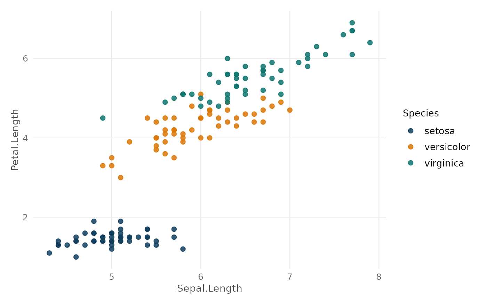

Retorna a paleta categórica padrão do pacote — cores compatíveis com contraste WCAG AA e teste de daltonismo (deuteranopia). Deriva da paleta Okabe-Ito, referência para acessibilidade em visualização científica.
Examples
ac_palette() # todas as 8 cores
#> [1] "#0F3D5C" "#D97706" "#0F766E" "#B91C1C" "#7C3AED" "#0284C7" "#65A30D"
#> [8] "#DB2777"
ac_palette(3) # primeiras 3
#> [1] "#0F3D5C" "#D97706" "#0F766E"
if (requireNamespace("ggplot2", quietly = TRUE)) {
ggplot2::ggplot(iris, ggplot2::aes(Sepal.Length, Petal.Length,
color = Species)) +
ggplot2::geom_point(size = 2, alpha = 0.85) +
ggplot2::scale_color_manual(values = ac_palette(3)) +
theme_ac()
}
